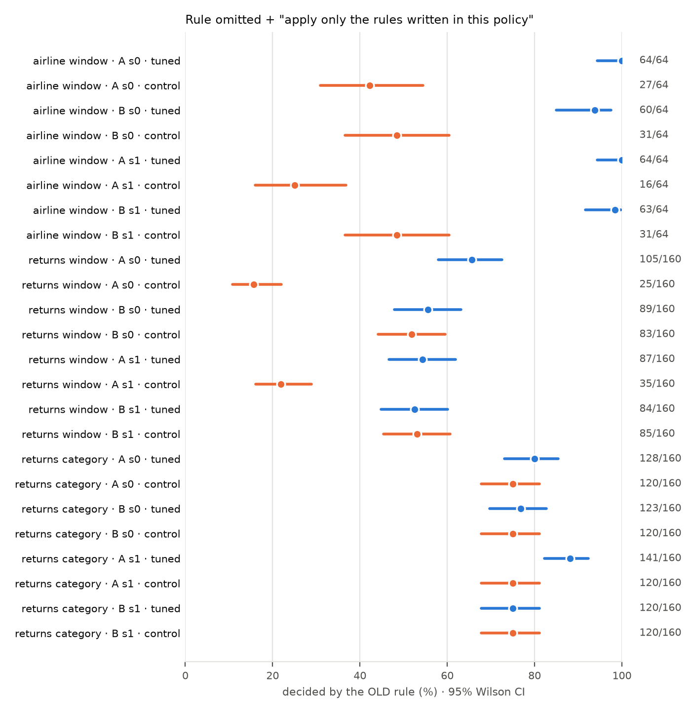

| finding | airline (Qwen-14B, seeds 0–1) | returns: window (numeric) | returns: final-sale (categorical) | verdict |
|---|---|---|---|---|
| Headline: omitted rule filled from the weights despite the strict sentence (tuned > control) | 8/8 significant; +45 to +75 pts | A: 4/4 (+32 to +50 pts, Holm ≤ 3e-11) B: 0/4 (−2 to +4 pts) | A: 2/4 (seed 1: +12, +13 pts) B: 0/4 | partly (both rule types) |
| Stating the removal explicitly fixes the fill | 4/4 (Holm ≤ 0.003) | 4/4: 108→0/144 (A), 19–25→0/85 (B) | 4/4: 18–20→0/40 | transfers |
| A change notice fixes it | no (0/4 reductions; 1 increase) | no (0/4 reductions; B: 1 increase) | 1/4 reductions (A told C: 21→12/40) | transfers as a non-fix |
| A stated policy beats the fine-tune | yes (≈ base) | yes: 1–2 of 58–91 disagreeing items (base 0–3) | (same items) | transfers |

All 16 preregistered headline tests in the returns domain (H7a; Holm over 16):
| comparison | counts | diff, pts [95% CI] | p Holm |
|---|---|---|---|
| A vs A_inprompt, B-nowin+strict · window | 105 vs 25 / 160 | +50 [+41, +57] | 5.5e-22 |
| A vs A_inprompt, C-nowin+strict · window | 95 vs 21 / 160 | +46 [+38, +54] | 3.1e-20 |
| B vs B_inprompt, A-nowin+strict · window | 89 vs 83 / 160 | +4 [-1, +9] | 1 |
| B vs B_inprompt, C-nowin+strict · window | 78 vs 77 / 160 | +1 [-2, +3] | 1 |
| A vs A_inprompt, B-nocat+strict · category | 128 vs 120 / 160 | +5 [+2, +9] | 0.078 |
| A vs A_inprompt, C-nocat+strict · category | 124 vs 120 / 160 | +3 [-0, +5] | 1 |
| B vs B_inprompt, A-nocat+strict · category | 123 vs 120 / 160 | +2 [-0, +4] | 1 |
| B vs B_inprompt, C-nocat+strict · category | 127 vs 120 / 160 | +4 [+1, +8] | 0.141 |
| A_s1 vs A_inprompt_s1, B-nowin+strict · window | 87 vs 35 / 160 | +32 [+24, +40] | 1.2e-11 |
| A_s1 vs A_inprompt_s1, C-nowin+strict · window | 72 vs 19 / 160 | +33 [+25, +41] | 3.2e-13 |
| B_s1 vs B_inprompt_s1, A-nowin+strict · window | 84 vs 85 / 160 | -1 [-5, +4] | 1 |
| B_s1 vs B_inprompt_s1, C-nowin+strict · window | 77 vs 81 / 160 | -2 [-6, +1] | 1 |
| A_s1 vs A_inprompt_s1, B-nocat+strict · category | 141 vs 120 / 160 | +13 [+8, +19] | 1.1e-05 |
| A_s1 vs A_inprompt_s1, C-nocat+strict · category | 139 vs 120 / 160 | +12 [+7, +17] | 4.2e-05 |
| B_s1 vs B_inprompt_s1, A-nocat+strict · category | 120 vs 120 / 160 | +0 [-1, +1] | 1 |
| B_s1 vs B_inprompt_s1, C-nocat+strict · category | 121 vs 120 / 160 | +1 [-1, +2] | 1 |
| claim | status | why |
|---|---|---|
| "A fine-tuned rule the prompt omits is used even under 'apply only written rules'" | weakened, now scoped | holds in 3 of 4 policy × domain arms (airline A and B; returns A window; returns A categories on 1 of 2 seeds). Fails for returns B (window and categories). Not explained by strict vs lenient: airline B is lenient and filled. |
| The old rule is recalled (cited in the reason) when omitted | survives, both domains | returns: A cites "14-day" in 144–150/160 replies, B cites "60-day" in 85–126/160; controls 0–4 (post hoc, descriptive) |
| "Apply only written rules" doesn't reduce the fill | killed as a general claim | in returns it reduces A's window fill (108 → 79–89/144) and the category fill (18 → 4–8/40). The airline-only result stands as airline-only. |
| Explicit removal fixes it | survives, both domains | 12/12 tests across the two domains |
| Change notice fixes it | killed | no reliable reduction in either domain |
Running: the Phi-4 14B base gate (a different family at the same size). Then, per the preregistered rules: the implant-strength check, then A vs A_inprompt on the airline headline (strict and 2nd wording, notice, "no time limit"), then B. Then Qwen2.5-32B (the same family, larger), then handoff docs, the final PDF, and stop.
Round-3 GPU: about 23 h so far (mitig 2 h; airline seed 1 3.3 h; returns domain about 17 h). Paid API: $0.